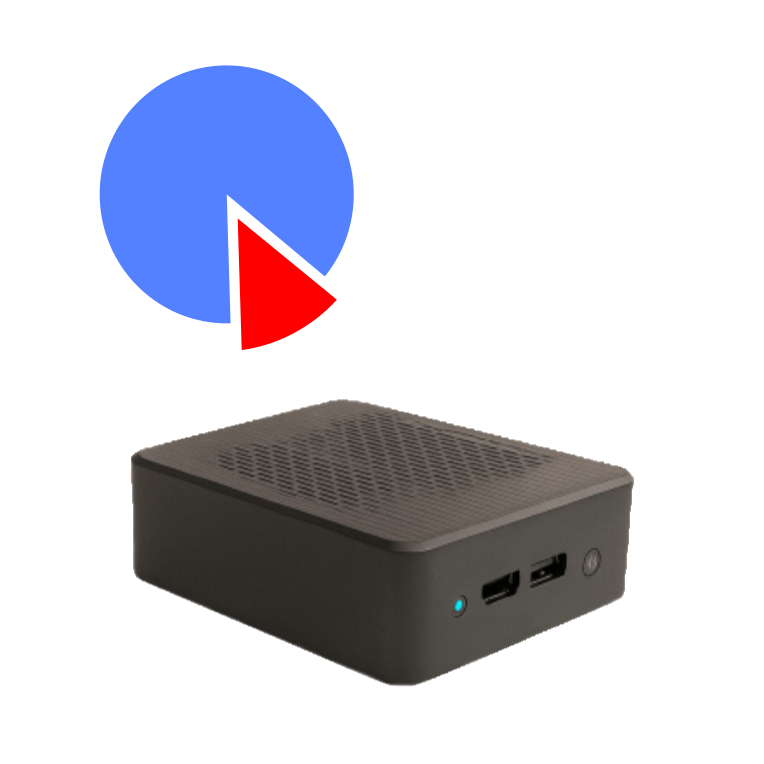
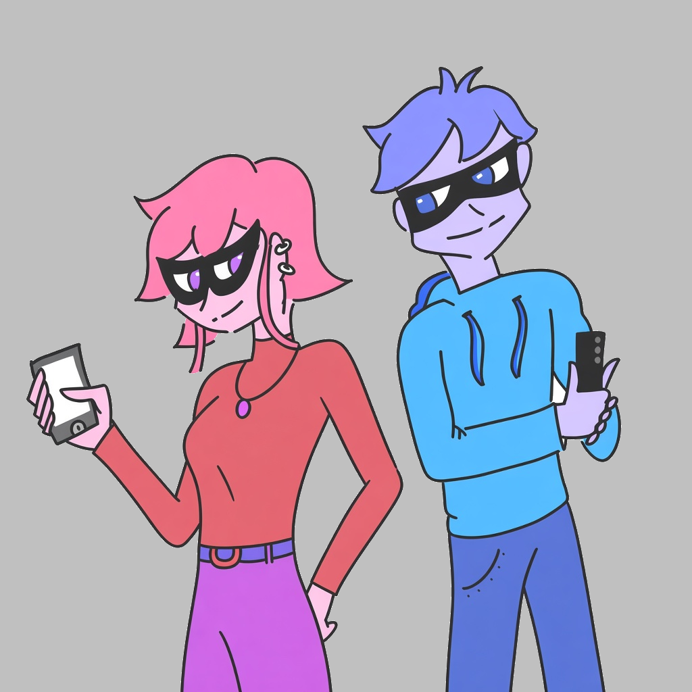
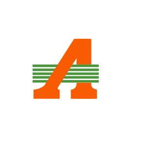

01 / 03
Destaque
QUIX PDV
Um sistema independente de ponto de venda e autoatendimento local. O cliente escaneia um QR Code, faz seu pedido e a operação ganha um fluxo mais rápido.
Ver case completo ↗01 Portfólio / construção em andamento
Sou Gabriel Santana, profissional de TI focado em criar produtos digitais objetivos, experiências simples e soluções que fazem a operação avançar.

02 Player profile
Sou um profissional de TI com experiência em desenvolvimento web, suporte técnico e consultoria tecnológica. Gosto de transformar ideias em soluções práticas, criando sistemas e ferramentas que resolvem problemas reais.
Sou entusiasta do software livre e defensor de tecnologias de código aberto. Estou sempre aprendendo, explorando novas ferramentas e procurando contribuir com projetos relevantes.
03 Mission select
Arraste para explorar os projetos.
Um sistema independente de ponto de venda e autoatendimento local. O cliente escaneia um QR Code, faz seu pedido e a operação ganha um fluxo mais rápido.
Ver case completo ↗
02 / 03Catálogo mobile de produtos tecnológicos com informações detalhadas, pensado para facilitar a descoberta e a venda através de links de afiliado.
Acessar projeto ↗
03 / 03Páginas internas criadas para organizar informações e facilitar o acesso das equipes de TI e loja dentro do Atacadão.
Ver demonstração ↗04 Open channel
Aberto a oportunidades, parcerias e boas conversas sobre tecnologia.